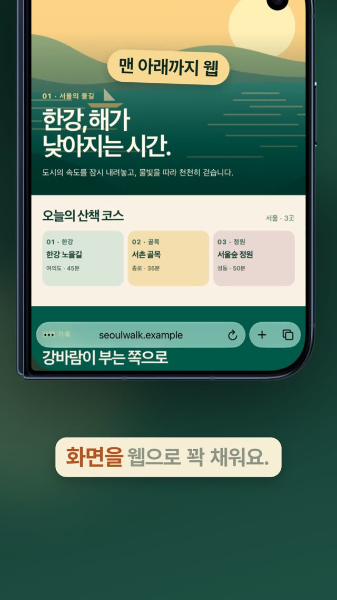
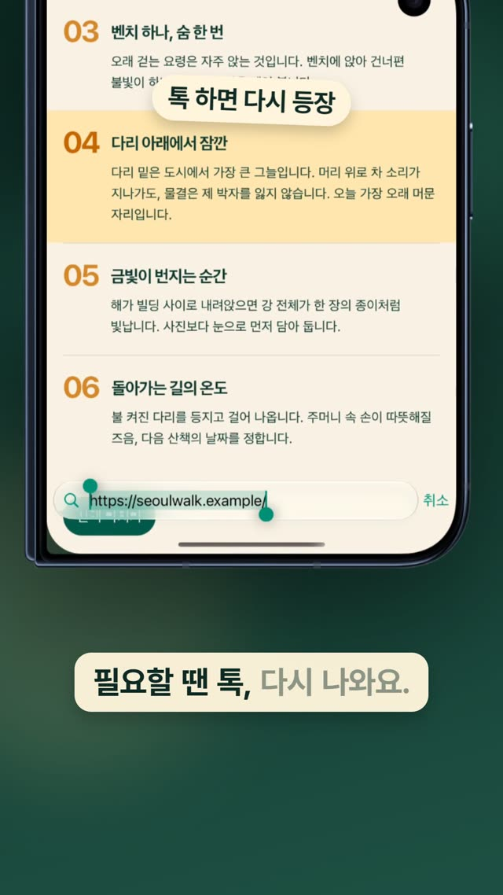

아이폰 듀오 접은 화면을 웹으로 꽉 채우기
접은 화면으로 웹을 보면 주소창과 여백 때문에 정작 글이 보이는 자리는 좁습니다. 풀스크린 브라우저는 이 화면을 웹페이지로 채우는 데 집중했습니다.
사용법
1. 맨 위부터 맨 아래까지
페이지를 열면 화면 맨 위부터 하단 주소창 뒤까지 웹페이지가 이어집니다.

2. 내리면 주소창이 작아지기
아래로 스크롤하면 주소창이 작은 캡슐로 줄어들어 글이 더 넓게 보입니다.

3. 탭하면 다시 나오기
작아진 주소창을 한 번 탭하면 원래 크기로 돌아옵니다. 주소 입력과 검색은 여기에서 합니다.
화면은 시뮬레이터에서 실제 앱을 조작해 녹화한 것입니다. 손가락 표시는 누른 위치를 보여 주는 그래픽입니다.